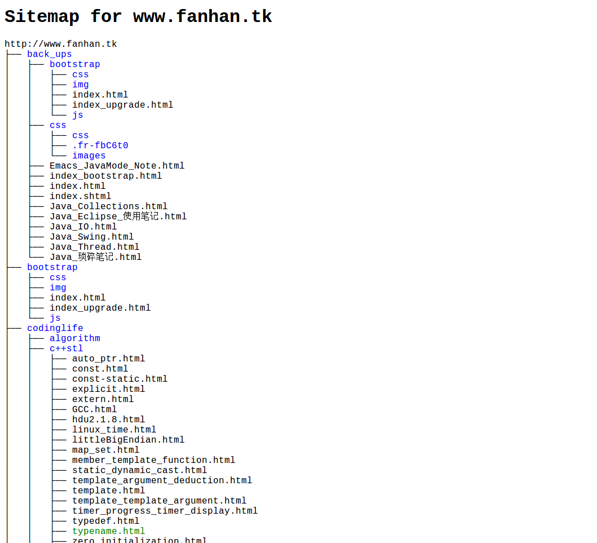

Tree 命令
可以利用下面的命令得到一个目录的导航树：
tree --dirsfirst -a -T "Sitemap for www.fanhan.tk" -P "*html" -I "\.git|index_swf|image|" -C -H "http://www.fanhan.tk" --charset UTF-8 -o sitemap.html
选项解析：
- –dirsfirst 目录在文件之前
- -a 所有文件
- -T 标题
- -P 匹配Pattern
- -I 不匹配Pattern
- -C 着色
- -H 在HTML输出结果中每个文件链接前面加上-H后跟的基址
- –charset 字符串
- -o 生成文件
生成结果类似图片：
